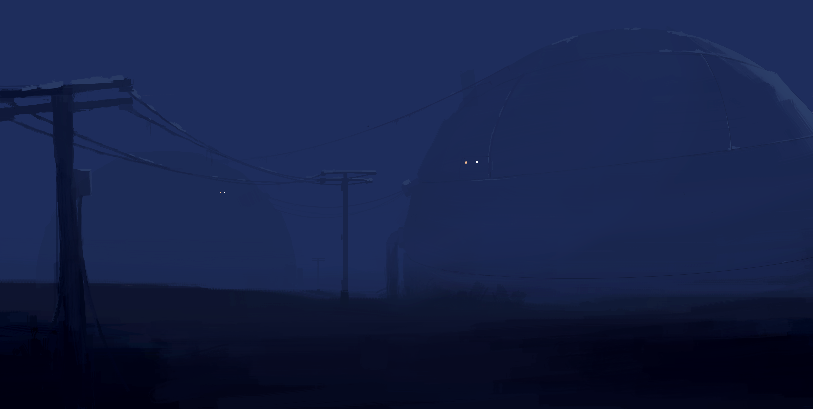
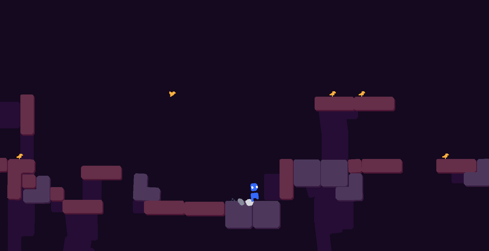
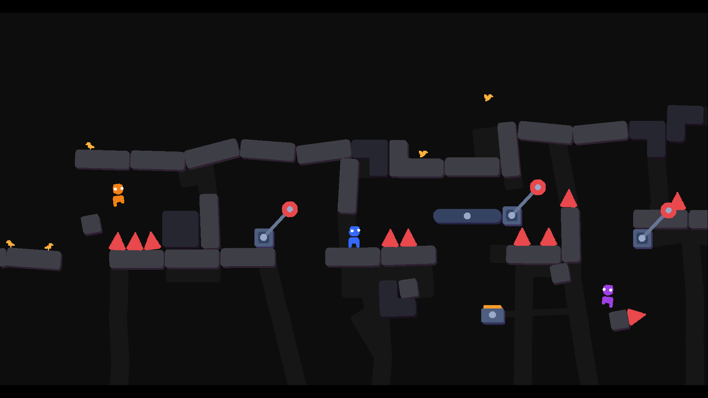
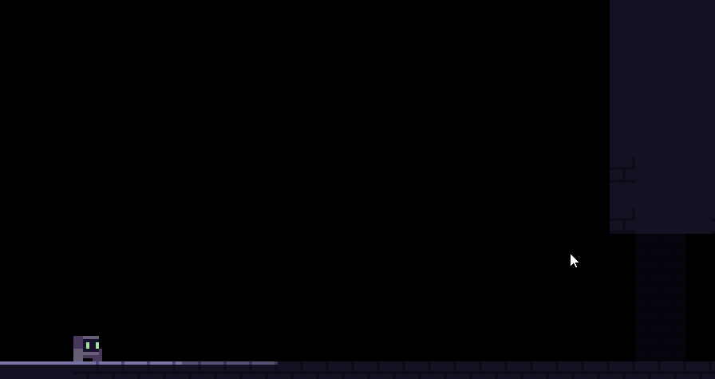
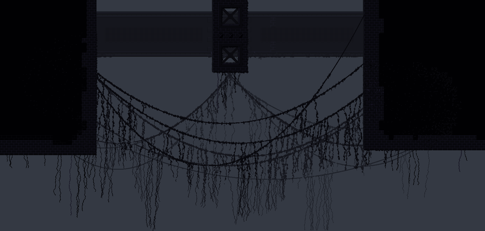
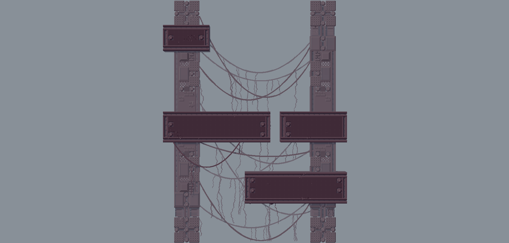
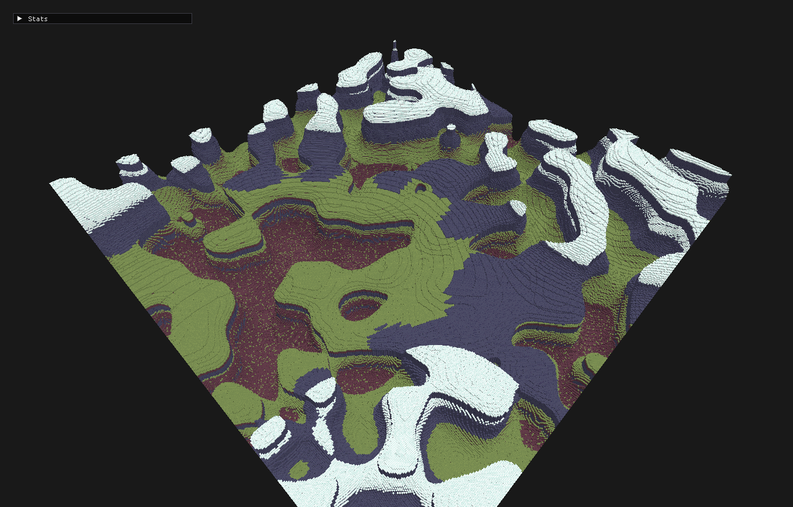
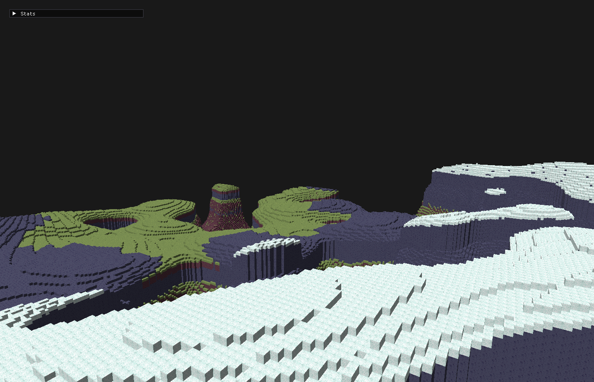

Dear Playdead
My name is Maxwell Vuksan and I am a software developer and hobbyist game developer from Adelaide, Australia.
I deeply admire the work of LIMBO and INSIDE, both from an technical and artistic perspective and believe I would be a valuable addition to the Playdead team.
You can see some of my work below



Notable Projects
Tiny Modules is a project exploring modular audio synthesis. It was developed in C++ with JUCE.

Snapshots is a game about organizing messy spaces and discovering secrets. It was developed in Unity3D and released onto Steam.

A physics based multiplayer game about building and competing through obstacle courses. It is currently being developed in Unity3D.
A notable challenge of this project has been synronizing the physics simulation over the network. To achieve this, the games physics uses a custom deterministic solution. Because of this deterministic nature, each client can run the simulation locally and syncronize the worlds state using just movement inputs.


Rendering Prototypes
Outside of in-engine development,
I’m particularly driven to understanding systems at a deeper level.
Recently, I've focused my time on understanding low-level rendering and building tools from
scratch using technologies such as OpenGL,
SDL and SFML.
A 2d platformer exploring dynamic lighting and procedual animation


A level editor which prerenders complex voxel based enviroments.


A voxel terrain visualization driven by perlin noise.

